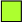
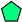
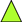

A cytoscapeJS Network Viewer demo using pre-generated example JSON datasets.
Select dataset:
|
|
|
|
|
|
|
|
| Gene |
Protein |
Pathway |
SNP |
Enzyme |
Reaction |
QTL |
Publication |
|
|  |
|
 |
|
|
|
 |
|
| Phenotype |
Biol. Process |
Cell. Component |
Protein Domain |
Trait Ontology |
Mol. Function |
Trait |
Enzyme Classification |